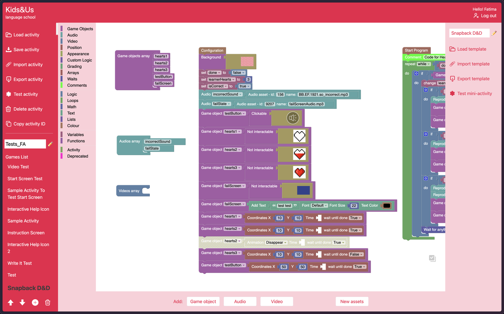
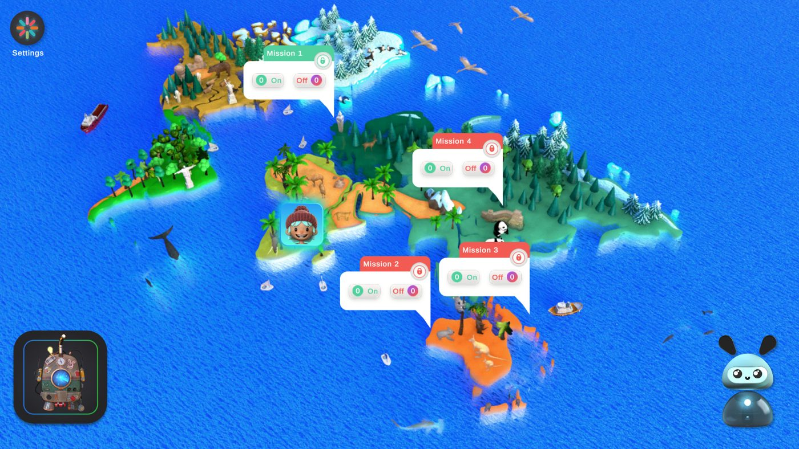
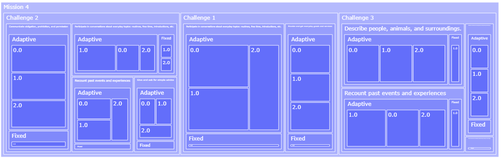

NOTE 01 · EVALUATION BEFORE LAUNCH
Learning Meter
Speaking and writing activities inside MyWay, Kids&Us’s gamified app for learners aged 8 to 12 learning English as a second language. A learner speaks into a game and ten words come back telling them what to fix, marked by AI against a teacher’s rubric. Getting those ten words right meant building the thing underneath: rubrics, anchor answers?ANCHOR ANSWERAn example answer for each rubric band, given to the scorer so it can see what each level looks like., a test set, and an evaluation loop that ran before anything reached a learner.
IN THE PRESSKids&Us mejora la participación de su alumnado en un 40% con la IA de MicrosoftMicrosoft Source EMEA, 16 January 2025
Four checkpoints before a learner saw a score
- CHECKPOINT 1 ✓The rubric I wroteFour bands, each with anchor answers for every activity.
- CHECKPOINT 2 ✓The rubric, runningOne answer followed through the pipeline, first prompts against tuned.
- CHECKPOINT 3 ✓The test set≈4,000 answers with known scores: ≈1,300 real, ≈2,700 synthetic.
- CHECKPOINT 4 ✓Before and afterDid it get more trustworthy? The score screen below.


Follow one answer through the Learning Meter
This work lived in Jupyter notebooks, rubric spreadsheets and model runs, and what a learner saw at the end of it was ten words of feedback. The walkthrough rebuilds the pipeline so the stages in between are visible: the same rubric, the same anchor answers, the same scores. Switch between the first prompts and the tuned ones to see what the evaluation loop changed.
SCORE SCREEN · FIRST PROMPTS VS TUNED
one block = 5%
Trade-offs I designed around
What a learner plays





What moved engagement
I redesigned the gamified loops from engagement data and A/B tested the redesign. MyWay went on to reach more than 25,000 learners in its first rollout.


PRODUCT SCREENS AND ARTWORK ARE KIDS&US’S
Where I worked across the lifecycle
-
01 · DISCOVER✓
- Speech and writing tasks for learners around eight
- Rubric bands
- Discovery into activity gamification
-
02 · PROTOTYPE✓
- Prompt databases
- Anchor answers per activity
-
03 · PILOT✓
- A test set of about 4,000 answers
- Real answers plus synthetic edge cases
- 10 representative franchise schools
-
04 · VALIDATE✓
- Evaluation loop before launch
- Every answer graded twice
-
05 · BUILD✓BEYOND THE BRIEF
- Handoff to engineers
- Caching for repeat answers
-
06 · MEASURE✓BEYOND THE BRIEF
- False passes, agreement, latency, cost
From a rubric to the accuracy numbers that decided what shipped.